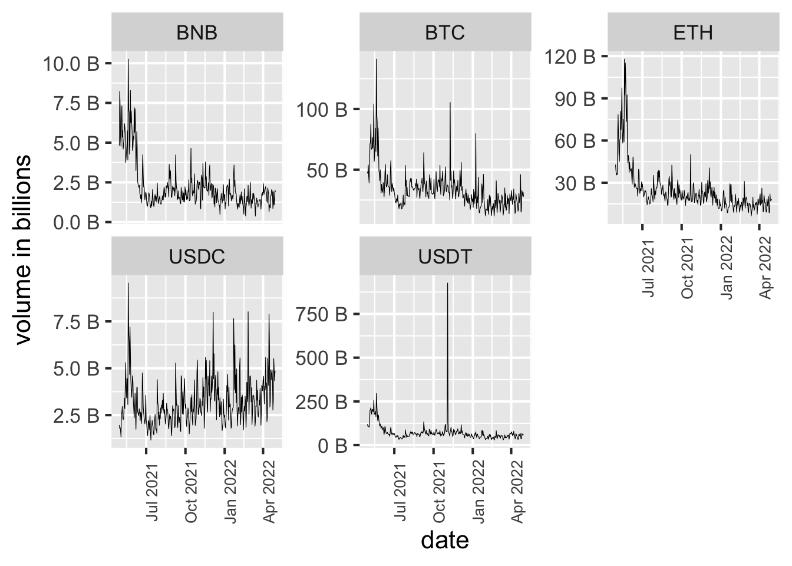

Chapter 5 Results
5.1 Overview
The price trend of top 5 cryptos are drawed below. As addressed before, the price of different cryptocurriencies vary a lot and hence we plot them separately by facet
We can obtain a general idea of the trend over a year. the price of BTC, ETH and BNB are high at end of April last year, then it bounce up and down, and for the last 4 months (start from 2022) they have a decreasing trend. USDC and USDT have price around 1 dollar since they are stable coin. By nature stable coin are expected to have same value as fiat currency it targets to. From the line plot above we saw that the price range of USDC and USDT is centered around 1 (USD), but still have volatility.
We then examine the data range by boxplot, by facet
Observed that the Bitcoin is undoubtly a giant in the current market. ETH and BNB are also expensive. The median price per ETH past year is around 3000. The median price per BNB past year is around 400. The rest two kinds of coin, USDC and USDT are waving around 1 dollar, and this is due to the fact that they are “stable coin” that linked to US dollar. The range of USDC and USDT are related small compared to other top cryptos, but they have do a lot of outliers in themselves.
5.2 Correlation
We are also interested in the correlation between each cryptocurrency, hence we draw a correlation map to visulize the relationship
Observed that the top cryptos in the market can divided into 2 groups. BTC, BNB and ETH have strong positive correlation, their price in general go up and down together. USDC and USDT have weak positive correlation, since they have target price at 1 USD.
5.3 How hot is the market?
The crypto market move fast with uncertainty, and we tried to compare the trading volatility over all cryptos past year
Observed that all top cryptos are decresing volatility through time. This means that the market is becoming stable and rational. Noticed that BNB has the highest volatility at the begining of our records. This is a relatively new cryptocurrency compared with BTC and ETH. We sepeculate that people are passion about new crypto when it first published. The stable coin USDC, USDT are more stable than last year and thus they probably become mature financial product (since they are suppose to fix their price to 1 usd).
Then we plot a scatter plot between volatility and market_cap, facet by different cryptocurrenies. The volatility is high when marketcap is high for all cryptos. This means price is extremely unstable when marketcap is high.
Another indicator of the crypto market is cooling down is that the dot plot between date and volume. We see a decreasing trend in trading volume of BTC, ETH and BNB over a year. This implies that less amount of coins are trading in the market.
The other group of our interests, USDC and USDT, have continuous trading volumes, indicate that people treat these two type of coins as a tool to exchange their fiat currency in and out of the blockchian industry for varied purposes. The trading market is cooling down but people joined in the crypto industry did not simply leave.
5.4 Dive into Stable Coin

The volume of USDC are smaller than USDT during the one year window we observed. They are similar tools that link to US dollar but it seems like USDT is popular than USDC. This might due to the fact that USDT launched eariler than USDC. USDT has a suspicious volume spick in November 2021, after browsing news and external information (other market data source) we suspect this is an error record.
We can stack two stable coins’ market cap together to get a general sense of how many US dollar go virtual – around 150 billion USD are now converted to stable coins. A 100% increase in amount of dollors are now tokens on the blockchain.
5.5 Crypto as an Investment
The top 3 cryptocurrencies (in market cap), BTC, BNB and ETH are mostly trading as a financial products instead of currencies. People invest in cryptos and expect returns in it. We can visualize the monthly returns of these cryptos to have a sense about what it looks like
The monthly return are similar. From the graph we observed that the return rate vary a lot, so investing in crypto might be risky